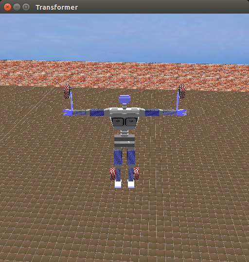
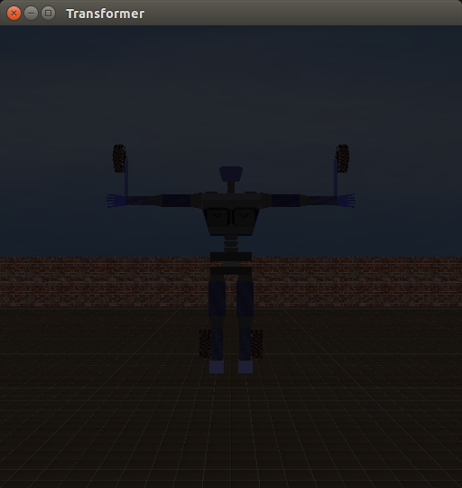
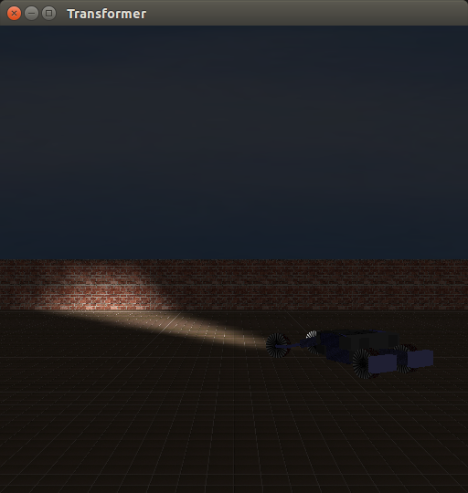
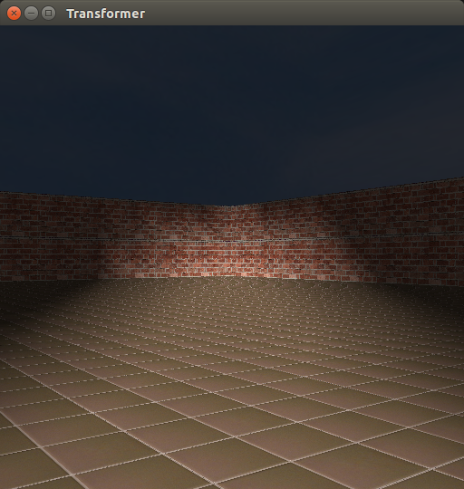
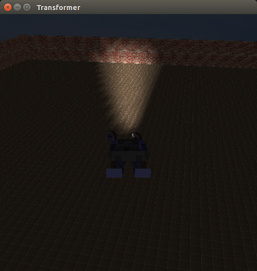
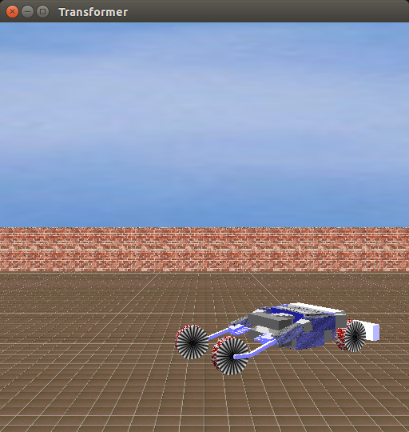
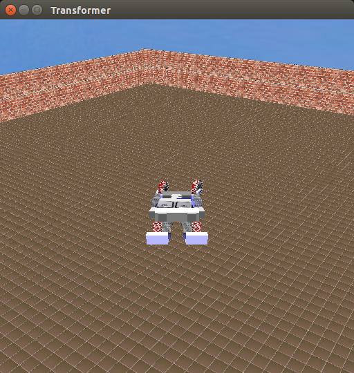

Introduction
Transformers are robots that can transform into various kinds of vehicles,
like cars, planes and helicopters.
The overall aim of this entire assignment is to create a short Film with
a tansformer of your own design. In this part of the assignment we
model the transformer. The report contains brief description of various concepts used in creation
of the model.
Team
Aditya Kumar Akash 120050046
Nishant Kumar Singh 120050043
The Vehicle
Controls have been added to move the vehicle appropriately.
1. Up arrow - move the vehicle forward.
2. Down arrow - move the vehicle in reverse direction.
3. Left arrow - turn the vehicle left (while the up arrow is pressed)
4. Right arrow - turn the vehicle right (while the up arrow is pressed)
Lighting and Texturing
In the environment, there is an arena kind of a structure surrounded by walls. Sky has also been incorporated and appropriately textured. Two lights have been added to illuminate the scene and keys control these lights. The vehicle also has two headlights which has been made using opengl spotlights.
Controls
1. 8 - Turns the first light on/off.
2. 9 - Turns the second light on/off.
3. 7 - Turns the headlight on/off.
Camera
Three cameras have been placed at different locations to give different views of the scene.Key 0 must be used to toggle between the camera postions.
Screenshots
Robot, Both lights on

Camera View changed

Lights off

Vehicle, Headlights on

Driver's view

Third person view

Static person view

Third person view, lights on